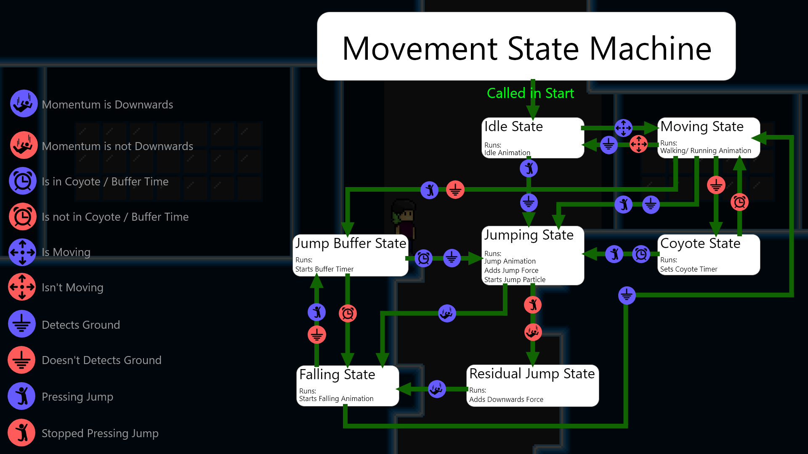

Current Project
This project is my most recent project and I am as of now still working on it to try and
improve it's movement and what not. It all statred with me wanting to be able to make a proper State Machine
(which you can read more about below) to improve my capabilities of movement and animations. This game is supposed
to become a precise platformer with many possibilities in temrs of momentum and speed.

State Machine
This is where all the state machine magic happens! The Image you see above is the Start Function in the Player
Class/Script. In this picture you can see that I've written down all the Transitions between states with a
specific value. all these transitions will be put into a list by the PlayerStateMachine Class/Script.
The PlayerStateMachine Class/Script will than check in which state the player is which at the start will be Idle
because that's what we Initialize in the Player Class/ Script. after this it will check with a for each loop if a transition
that starts from the Current State (in our case Idle) has all it's vallues set to true. If this is the case it will
change the current state in the ChangeState function.
Reading this out loud makes it sound very complicated so if you want to see my Scripts you can find them at the bottom of this page.

Movement
People always seem to underestimate making movement for platformer games and always say that it's simple but a lot of people
don't realize that making a proper platformer doesn't only require making a simple jump and walking script. To accomplish
smooth gameplay a lot more moves need to be added. One extra move I added is a Coyote Jump making it so the player can jump for a
short amount of time after walking of a platform. This makes the game feel more forgivable. Another Move I added is the Jump buffer
which creates a short window to press the jump button before the player lands causing the player to jump right when he lands. this
makes the game also more forgivable.

Pixel Snapping
because my game is made in pixel art I wanted to make the pixels from the player line up with the pixels from the tiles. This was
a little challanging because it was hard to set the resolution right without being able to set the ortho size easily in the standerd
unity camera. Luckily Cinemachine has an ortho size setting so my problem was solved pretty quickly after installing it.
In the Gif above you can see that the player in the engine (on the left) doesn't snap to the right pixel but the player in the game
window does.

Tile Rules
I decided to make a tile rule system in my game because I think I'm going to have to place a lot of tiles to make a proper platformer.
making this sytem took a pretty long time but I feel like it will be worth it when I start doing level design and hope to save
some time with it.

Animations
I created some animations to make the movement feel more fluid.